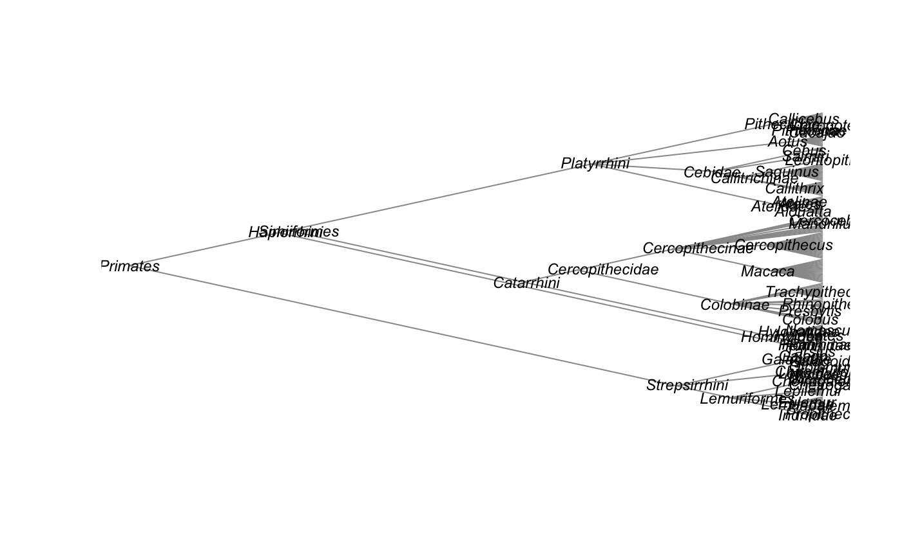

vignettes/sparql.Rmd
sparql.RmdRich, semantically meaningful metadata lies at the heart of the NeXML standard. R provides a rich environment to unlock this information. While our previous examples have relied on the user knowing exactly what metadata they intend to extract (title, publication date, citation information, and so forth), semantic metadata has meaning that a computer can make use of, allowing us to make much more conceptually rich queries than those simple examples. The SPARQL query language is a powerful way to make use of such semantic information in making complex queries.
While users should consult a formal introduction to SPARQL for further background, here we illustrate how SPARQL can be used in combination with R functions in ways that would be much more tedious to assemble with only traditional/non-semantic queries. The SPARQL query language is provided for the R environment through the rrdf package [@Willighagen_2014], so we start by loading that package. We will also make use of functions from phytools and RNeXML.
We read in an example file that contains semantic metadata annotations describing the taxonomic units (OTUs) used in the tree.
In particular, this example declares the taxon rank, NCBI identifier and parent taxon for each OTU, such as:
<otu about="#ou541" id="ou541" label="Alouatta guariba">
<meta href="http://ncbi.nlm.nih.gov/taxonomy/182256"
id="ma20"
rel="concept:toTaxon"
xsi:type="nex:ResourceMeta"/>
<meta href="http://rs.tdwg.org/ontology/voc/TaxonRank#Species"
id="ma21"
rel="concept:rank"
xsi:type="nex:ResourceMeta"/>
<meta href="http://ncbi.nlm.nih.gov/taxonomy/9499"
id="ma22"
rel="rdfs:subClassOf"
xsi:type="nex:ResourceMeta"/>
</otu>In this example, we will construct a cladogram by using this information to identify the taxonomic rank of each OTU, and its shared parent taxonomic rank. (If this example looks complex, try writing down the steps to do this without the aid of the SPARQL queries). These examples show the manipulation of semantic triples, Unique Resource Identifiers (URIs) and use of the SPARQL “Join” operator.
Note that this example can be run using demo("sparql", "RNeXML") to see the code displayed in the R terminal and to avoid character errors that can occur in having to copy and paste from PDF files.
We begin by extracting the RDF graph from the NeXML,
rdf <- get_rdf(system.file("examples/primates.xml", package="RNeXML"))
tmp <- tempfile() # so we must write the XML out first
xml2::write_xml(rdf, tmp)
graph <- rdf_parse(tmp)We then fetch the NCBI URI for the taxon that has rank ‘Order’, i.e. the root of the primates phylogeny. The dot operator . between clauses implies a join, in this case
root <- rdf_query(graph,
"SELECT ?uri WHERE {
?id <http://rs.tdwg.org/ontology/voc/TaxonConcept#rank> <http://rs.tdwg.org/ontology/voc/TaxonRank#Order> .
?id <http://rs.tdwg.org/ontology/voc/TaxonConcept#toTaxon> ?uri
}")This makes use of the SPARQL query language provided by the rrdf package. We will also define some helper functions that use SPARQL queries. Here we define a function to get the name
get_name <- function(id) {
max <- length(nexml@otus[[1]]@otu)
for(i in 1:max) {
if ( nexml@otus[[1]]@otu[[i]]@id == id ) {
label <- nexml@otus[[1]]@otu[[i]]@label
label <- gsub(" ","_",label)
return(label)
}
}
}Next, we define a recursive function to build a newick tree from the taxonomic rank information.
recurse <- function(node){
# fetch the taxonomic rank and id string
rank_query <- paste0(
"SELECT ?rank ?id WHERE {
?id <http://rs.tdwg.org/ontology/voc/TaxonConcept#toTaxon> <",node,"> .
?id <http://rs.tdwg.org/ontology/voc/TaxonConcept#rank> ?rank
}")
result <- rdf_query(graph, rank_query)
# get the local ID, strip URI part
id <- result$id
id <- gsub("^.+#", "", id, perl = TRUE)
# if rank is terminal, return the name
if (result$rank == "http://rs.tdwg.org/ontology/voc/TaxonRank#Species") {
return(get_name(id))
}
# recurse deeper
else {
child_query <- paste0(
"SELECT ?uri WHERE {
?id <http://www.w3.org/2000/01/rdf-schema#subClassOf> <",node,"> .
?id <http://rs.tdwg.org/ontology/voc/TaxonConcept#toTaxon> ?uri
}")
children <- rdf_query(graph, child_query)
return(paste("(",
paste(sapply(children$uri, recurse),
sep = ",", collapse = "," ),
")",
get_name(id), # label interior nodes
sep = "", collapse = ""))
}
}With these functions in place, it is straight forward to build the tree from the semantic RDFa data and then visualize it
newick <- paste(recurse(root), ";", sep = "", collapse = "")
tree <- read.newick(text = newick)
collapsed <- collapse.singles(tree)
plot(collapsed,
type='cladogram',
show.tip.label=FALSE,
show.node.label=TRUE,
cex=0.75,
edge.color='grey60',
label.offset=-9)